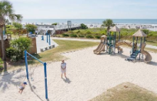
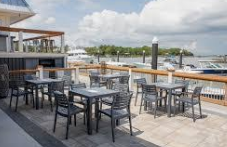
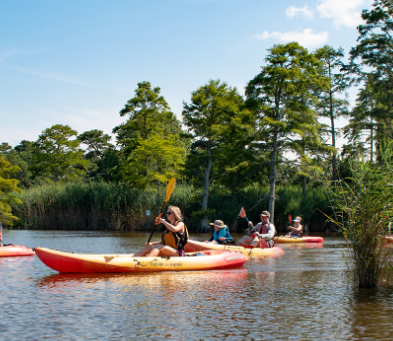
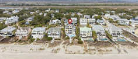

Isle of Palms is the easy beach option for a Charleston bach trip. It sits about 15 miles from downtown, roughly a 25 to 35 minute drive, and everything a group needs is packed around Front Beach on Ocean Boulevard: the county park, the bars, the rooftop decks and the late-night burgers.
Spend the days on the sand and the marsh, then walk to dinner and live music. Mount Pleasant sits on the way in, so a stop at Shem Creek fits on arrival day or the morning after. This page also works as a starter plan for a Mount Pleasant bach weekend.
Three Island Bookings Worth Locking In
These are the plans that fill up first. Book them before the house and build the rest of the weekend around them.
Claim a spot at Isle of Palms County Park on 14th Avenue, right beside Front Beach. It has a boardwalk to the sand, restrooms, showers, changing rooms, volleyball nets, picnic tables with grills and chair and umbrella rentals, plus summer lifeguards. Parking costs extra and the lot is often full by mid-morning on weekends, so arrive early or walk in for free.

Set up early at the county park before the lot fills.
For an afternoon on the water, Coastal Expeditions runs guided kayak and paddleboard trips and rentals out of the Isle of Palms Marina, winding through salt marsh where dolphins, pelicans and egrets are regulars. Book the guided version if the group is new to paddling. The creeks twist like a maze and the inlet toward Sullivan's Island pulls hard between tides.
Getting around the island is half the fun in a rented golf cart or street-legal LSV. Regular carts are daylight-only and stay off Palm Boulevard. LSVs can use Palm Boulevard after dark. Neither is allowed on the Isle of Palms Connector, and most rental companies want drivers to be 21 or older.
Front Beach Food, Drinks and Live Music
Nearly every good night on the island happens on a few blocks of Ocean Boulevard, all walkable from the county park. The Windjammer has been the island's live music deck since 1972, with burgers, wings and peel-and-eat shrimp ordered at the bar and bands on the deck most nights. Two doors down, Coconut Joe's Beach Grill serves weekend brunch from 10am and runs a covered rooftop bar over the ocean. Smugglers Island Eats & Rum Shack mixes rum cocktails and turns out the best smash burger on the strip. For a cheap beer and a game of giant Jenga, The Dinghy is the dive bar near the beach.

Rooftop drinks over the ocean on Front Beach.
For sunset, head to the marsh side. Islander 71 Fish House sits at the marina with a raw bar, a deck bar and wide views of the Intracoastal Waterway. The Boathouse at Breach Inlet serves waterfront seafood at the south end of the island.
For the dressed-up dinner, Coda del Pesce on Ocean Boulevard does upscale Italian seafood right on the water. Acme Lowcountry Kitchen is the relaxed sit-down for shrimp and grits.
Every pick here is our own, and no business pays to be listed. More mainland meals are in our Charleston restaurant guide.
A Shem Creek Side Trip in Mount Pleasant
Shem Creek is a working shrimp-boat creek lined with decks, bars and a public boardwalk, sitting right between downtown and the island. Start on the free boardwalk at Shem Creek Park in late afternoon, when the boats come back in and the dolphins tend to show up. From there, paddle the creek at golden hour with Coastal Expeditions. Their two-hour tour includes instruction, so nobody needs experience.

Golden hour paddling on Shem Creek.
When it's time to drink, Red's Ice House is the classic for cold beer and roasted oysters at sunset. Saltwater Cowboys pairs BBQ and seafood with live music on a big deck, and Tavern & Table handles small plates and dockside cocktails. Most creek spots run weekday happy hours from about 4 to 7pm.
For dinner, NICO Oysters + Seafood brings a wood-fired, French-leaning menu and the deepest raw oyster list on the creek. Vickery's Bar & Grill and Water's Edge round out the dockside options. Call ahead for any table over eight.
Group Stays on the Island
A house beats a hotel block here. Look for a rental within a short walk or cart ride of Front Beach, with a big porch and enough beds that nobody lands on the couch. The city usually caps short-term rental guests at two per bedroom plus two, with a 12-person maximum. Count heads before booking and tell the host it's a bachelorette weekend.

A porch big enough for the whole crew.
Groups that want resort perks should look at Wild Dunes Resort at the quiet end of the island. It offers villas, condos and homes, two golf courses, and the marina under two miles away. Check-in runs through its Welcome Center, and the resort has its own parking and vehicle rules, so read them before booking. Splitting the trip with downtown? The lodging picks in our main Charleston guide cover the peninsula side.
One Island Day, Start to Finish
Water and sun while it's light, Front Beach after dark. Shift the times, but keep the order.
Morning
Brunch at Coconut Joe's, then claim sand at the county park before the lot fills.
Midday
Volleyball, beach chairs, then burgers and wings at The Windjammer.
Afternoon
A guided marsh paddle, or a drive to Shem Creek for the boardwalk and happy hour on a deck.
Sunset
Dolphin cruise from the marina, or drinks at Islander 71 with Intracoastal views.
Night
Dinner at Coda del Pesce, live music at The Windjammer, then the rooftop at Coconut Joe's. Rideshare back to the house.
Island Rules That Catch Groups Off Guard
On the Sand
No alcohol, no glass: fines start at $100 per offense. Keep drinks on the porch or the patio.
No balloons: foam coolers and cups, single-use plastic bags and straws are banned too. Bring fabric banners instead of a balloon arch.
No smoking or vaping: this covers the beach and the access paths. Fireworks, open fires and overnight sleeping are also out.
Fill your holes: any hole you dig gets filled before you leave.
Carts and LSVs
Standard carts: daylight only, on roads posted 35 mph or less, and never on Palm Boulevard.
LSVs: allowed on Palm Boulevard and after dark.
Neither: on the beach, access paths, sidewalks or the Connector. Impaired driving laws apply to carts too.
Parking and Rides
Paid parking: runs March 1 to October 31, 8am to 8pm, at city lots and Ocean Boulevard meters near Front Beach.
Free parking: along Palm Boulevard, farther out. Keep all four wheels off the road and clear of beach paths.
Nights out: plan a rideshare, especially after drinking.
These rules come from the City of Isle of Palms and can change. Check the city's site before the trip.
More Trip Planning
For downtown plans like harbor cruises, decor teams, King Street nightlife and a four-day itinerary, start with the main Charleston guide. Prefer a looser beach town? The Folly Beach trip guide covers Center Street and the pier. Still picking dates? The best time to visit breaks down weather and crowds, and our restaurant picks cover group dinners on the peninsula.
Book the Boat, Then the House
Island weekends book up from the water first. Lock in the cruise or paddle, grab a house near Front Beach, and leave the nights loose for live music on Ocean Boulevard. Know an island spot we missed? Send it our way.